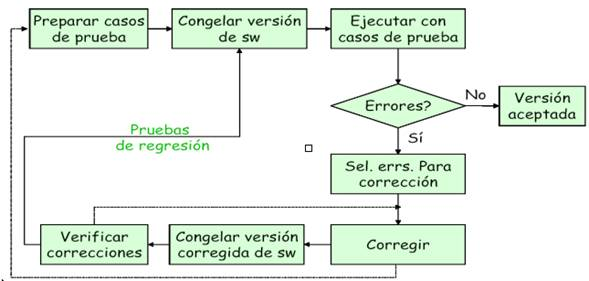
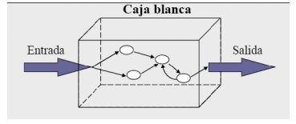
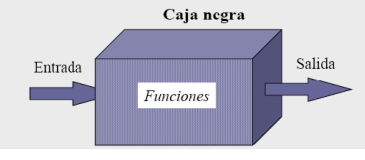
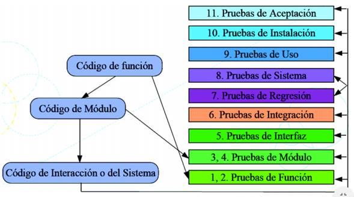

Lectura No. 1
Ubicación Sede Nacional
Nuestra ECBTI |
|
Autor: Dayra Delgado En esta página está relacionado todo lo que debe saber sobre las Pruebas de Software. Para qué sirve las Técnicas de Prueba de Software?
Quién es el encargado de realizar las pruebas?
Cuál es el procedimiento para realizar las pruebas? Toda prueba necesita tener una serie de pasos a desarrollar:  De qué se trata la verificación y validación? Verificar y validar la aplicación es el resultado de que se ha desarrollado el producto correctamente al terminar las pruebas, son aquellas actividades que aseguran la implementación de una aplicación. Cuáles son las técnicas para aplicación de pruebas de Software? Las técnicas se dividen: Técnicas de caja blanca o estructurales: Se basan en un minucioso examen de los detalles procedimentales del código a evaluar, por lo que es necesario conocer la lógica del programa.  Técnicas de caja negra o funcionales: Que realizan pruebas sobre la interfaz del programa a probar, entendiendo por interfaz las entradas y salidas de dicho programa. No es necesario conocer la lógica del programa, únicamente la funcionalidad que debe realizar.  Cuáles son las prueba que existen? Hay diferentes Tipos de pruebas descritos a continuación:  |